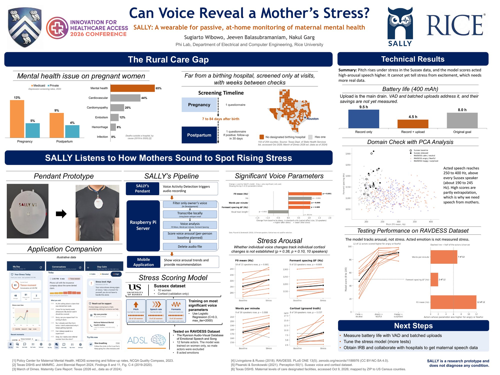
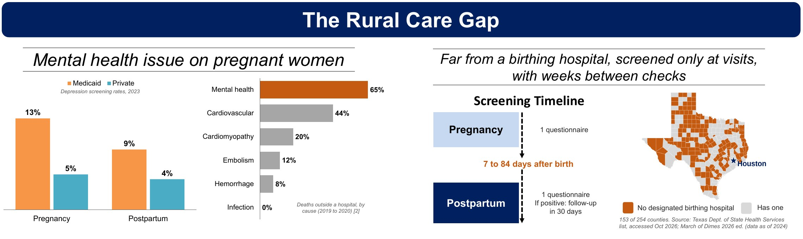
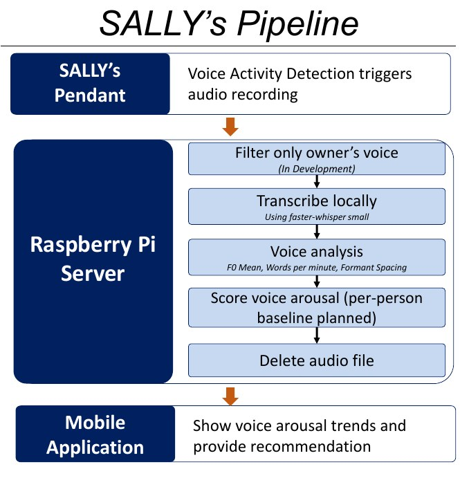
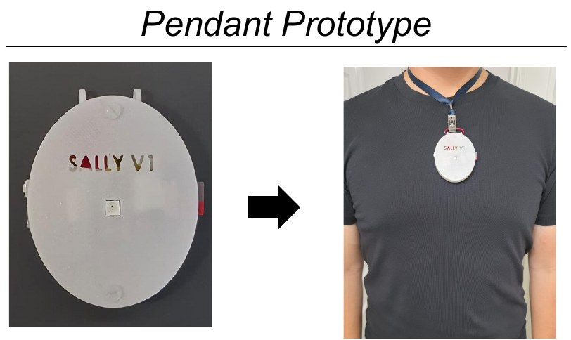
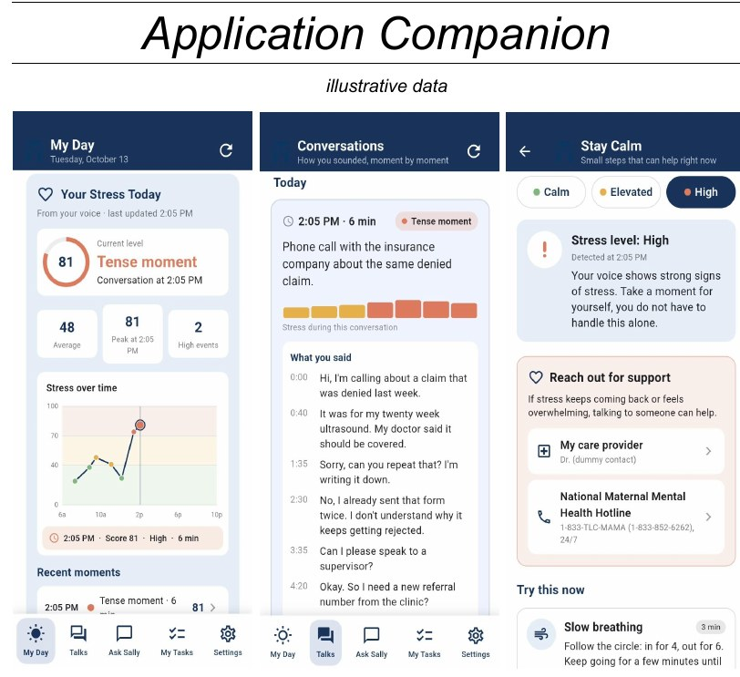
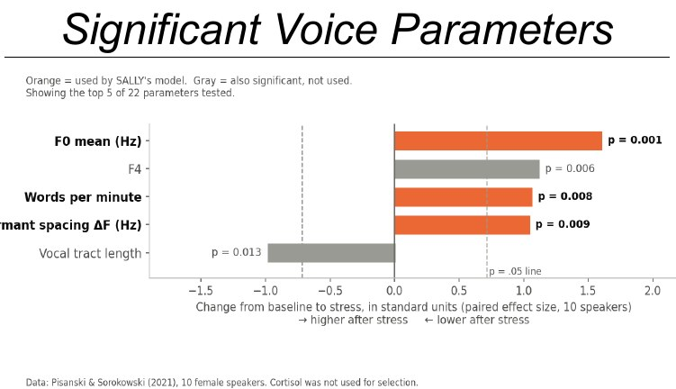
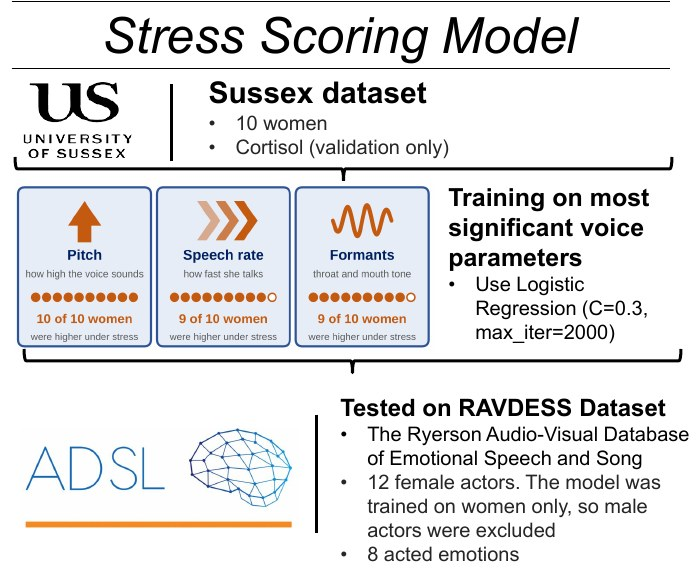
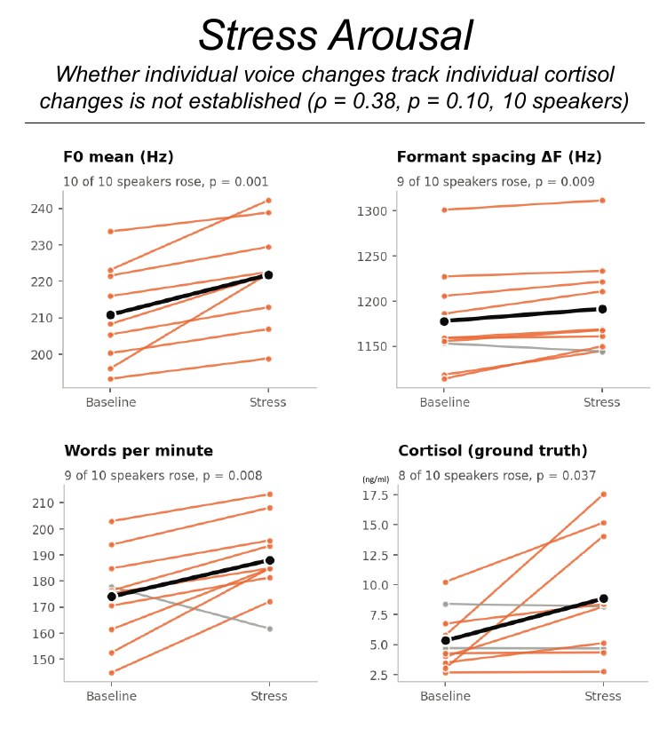
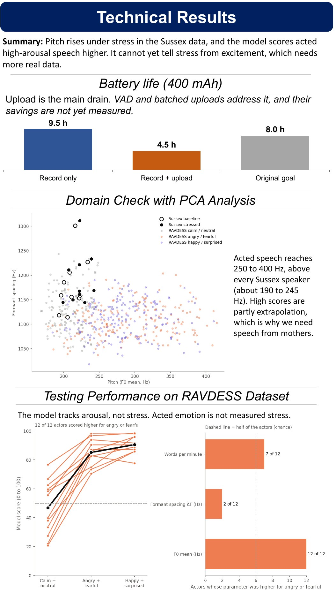
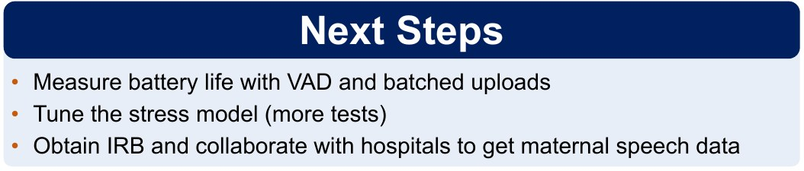

Embedded · Wearable · Edge ML · ELEC 594 Capstone
SALLY
A wearable for passive, at-home monitoring of maternal mental health.

Rice360 Innovation for Healthcare Access 2026 poster. Click to open full size.
SALLY is a necklace that listens for vocal markers of rising stress during pregnancy and postpartum. All processing happens on a local Raspberry Pi edge server, with no cloud services and no third-party API calls. It is a two-semester Rice University ECE capstone (ELEC 594), supervised by Nakul Garg. SALLY is a research prototype and does not diagnose any condition.
The Problem
Mental health conditions are a leading, preventable cause of pregnancy-related death in the U.S., yet fewer than 1 in 5 pregnant and postpartum patients receive standard depression or anxiety screening. Screening today is episodic: a questionnaire at a scheduled visit, weeks apart, while acute stress can spike and resolve in minutes and go entirely unobserved.
SALLY's bet is that continuous, passive, privacy-preserving vocal monitoring can build the longitudinal picture that periodic screening cannot. Rural mothers, who may live far from a birthing hospital, are the motivating case.

My Role
I own the embedded hardware and firmware end to end: enclosure design, firmware architecture, power management, and device reliability. I also built the stress-detection model (Fall 2026), and I am the sole author of the capstone report and presentations.
The project began as a three-person team. Jeeven Balasubramaniam built the original Spring 2026 server-side language pipeline and helped build the mobile app, and he co-presents the Rice360 poster. The mobile app was a joint effort.
System Architecture
Wearable Hardware
Seeed XIAO ESP32-S3 Plus, INMP441 PDM microphone, microSD for local buffering, a WS2812B RGB status LED and push button on a small dedicated PCB, and a 500 mAh LiPo battery.
Firmware
C++ on ESP-IDF v5.5.2 and FreeRTOS. On-device voice activity detection (ESP-SR VADNet) gates the recording pipeline, so only real conversation is captured and queued, with no wake word.
Edge Server
Raspberry Pi 5 running self-hosted Whisper transcription, speaker diarization with owner-voice enrollment, voice analysis, and local LLM summarization. Audio is deleted after analysis.
Mobile App
Flutter app over Tailscale. Scope is deliberately narrow: voice-derived model scores and conversation transcripts for the mother only, with no physiological biomarkers and no caregiver features.

Enclosure and Prototype
Designed in SolidWorks. The first prototype was a cube, which proved too bulky and swung while walking. That failure drove the current design: a flat, edge-free pebble split into a bottom tray that holds all the electronics and touches the chest, and a top lid that is only a cover. It is fastened with M2.5 screws into heat-set brass inserts instead of self-tapping into plastic, and twin molded cord loops keep the pendant from spinning on the lanyard.


Companion app screens (illustrative data).
Engineering Highlights
Each of these was a real failure caught and fixed before it became a silent one.
Silent data loss during uploads
A mutex protecting SD card access was held for the whole HTTP upload, a full network round trip. Any conversation that happened while a file was uploading was silently dropped, with no error anywhere. I restructured the path to read the file into a PSRAM buffer, release the lock, then upload outside it. Confirmed on real hardware.
Server upload stalls of up to a minute
Intermittent stalls of about 57 seconds traced to the Pi's Flask server running single-threaded, with the transcription and LLM pipeline sharing the same Python GIL. Enabling threaded request handling fixed it, verified on hardware.
Upload ordering bug
The on-device file listing returned raw filesystem order, which both uploads and low-storage eviction assumed was chronological. A newer recording could be evicted or uploaded ahead of an older one. Because filenames are fixed-width and zero-padded, one lexicographic sort at the shared choke point made both paths correct.
Battery versus upload bandwidth (Semester 1)
On the original 400 mAh cell, recording alone ran 9.5 hours but recording plus Wi-Fi upload ran only 4.5 hours, missing the 8-hour wear target. Uploading large audio files, not recording, was the dominant drain. That led to local SD buffering with batched uploads and, later, a catch-up path that bundles a backlog into one multipart request with per-file confirmation. These hours are last semester's numbers on old hardware. The savings from VAD and batching are not yet measured.
Stress-Scoring Model
Instead of training on an unlabeled dataset, I grounded the feature selection in a peer-reviewed study (Pisanski & Sorokowski, 2021) that measured cortisol alongside voice recordings from 10 women at rest and right before an oral exam. Cortisol is only a validation signal, never a training target, since a wearable cannot sample saliva.
Three uncorrelated acoustic measures feed a logistic regression: mean pitch (F0), speech rate, and formant spacing. With leave-one-speaker-out cross-validation the AUC is 0.78, which falls to a more honest 0.64 once feature selection is nested inside the cross-validation.



The Honest Result
I tested the model on RAVDESS, a separate dataset of 12 female actors portraying 8 emotions. Angry and fearful clips scored higher than calm and neutral clips for all 12 of 12 actors, which looks like a clean win. But happy and surprised clips scored even higher, and surprised was the single highest of the eight emotions.
So the model is an arousal detector, not a stress detector. Telling genuine stress from excitement will need physiological ground truth from a real patient population, not acted emotion. That is why the output is labeled a "model score" (0 to 100) and never a "stress score". Both datasets are small and neither is pregnancy-specific.

Status and Next Steps
- Rice360 Innovation for Healthcare Access 2026 poster, October 22, 2026
- ELEC 594 midterm presentation and 3-page IEEE-format report, October 21, 2026
- Rice Research in Action graduate student showcase, November 13, 2026
Still open, and not claimed as done:
- Measure battery life with VAD and batched uploads (needs a 5V step-up converter to test properly)
- Experimentally validate the owner-voice filter
- Tune the stress model with more tests
- Obtain IRB approval and collaborate with a hospital to collect real maternal speech data. No clinical partnership exists yet.

Stack
- C++ · ESP-IDF 5.5.2 · FreeRTOS
- ESP-SR 2.5.1 (VADNet)
- XIAO ESP32-S3 · INMP441 · microSD
- SolidWorks
- Raspberry Pi 5 · Flask · Whisper
- Python · Parselmouth · scikit-learn
- Flutter · Tailscale
- Datasets: Sussex cortisol, RAVDESS
Code and Credits
- Wearable firmware repository
- Mobile app repository
- Nakul Garg, project supervisor, Phi Lab, Department of Electrical and Computer Engineering, Rice University
- Jeeven Balasubramaniam, collaborator on the server pipeline and mobile app